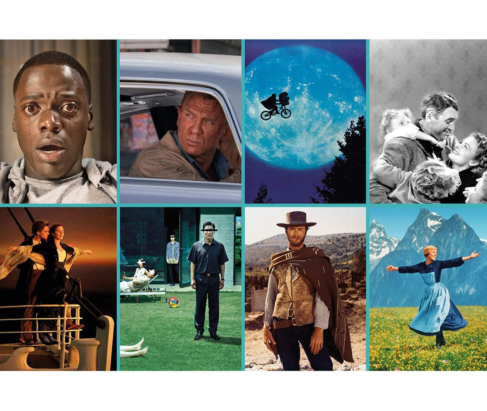
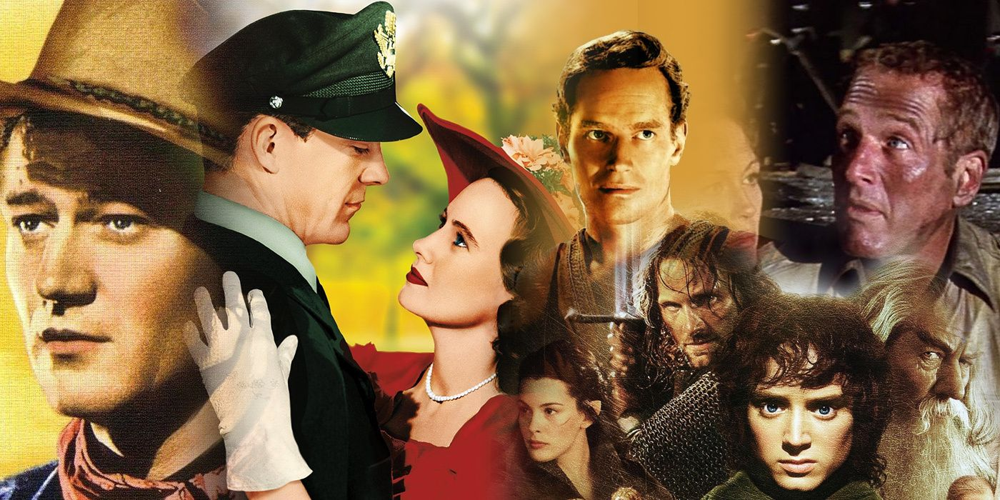
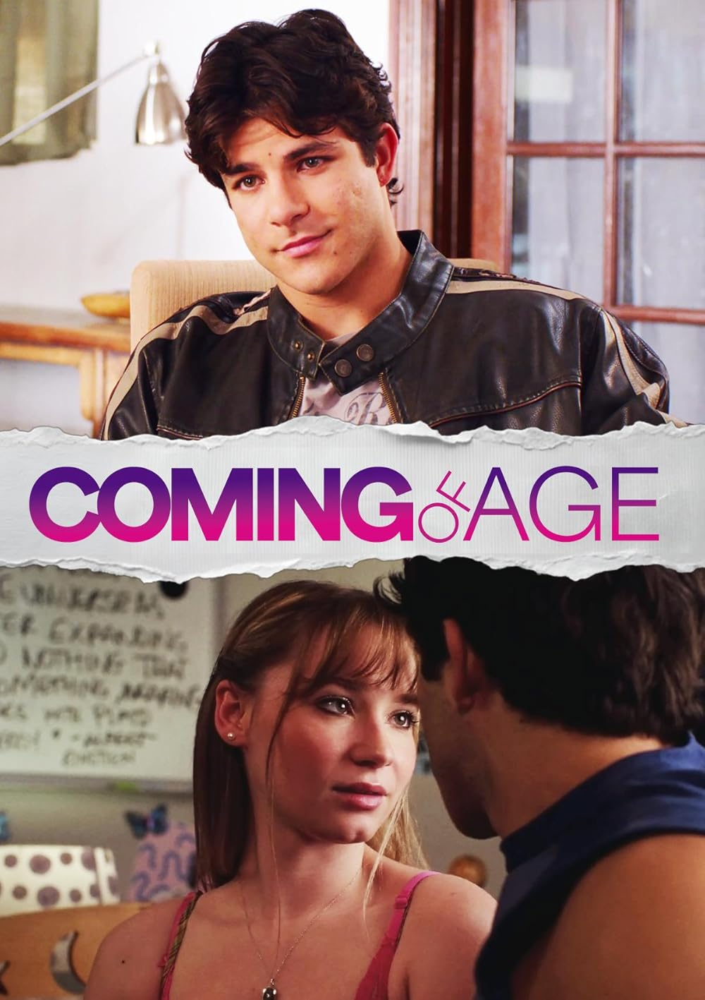
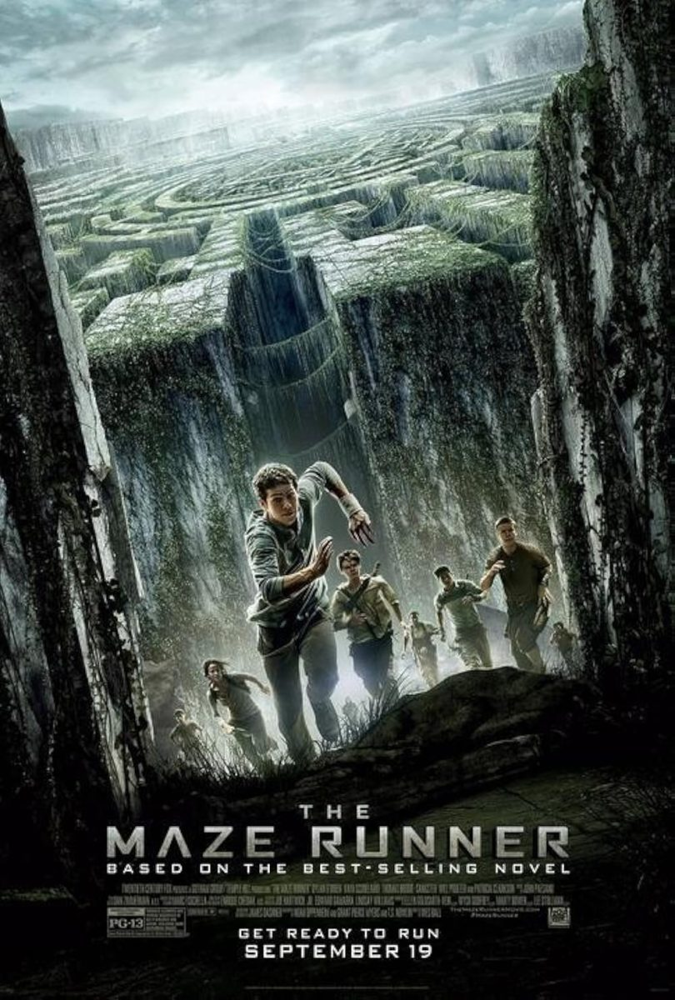
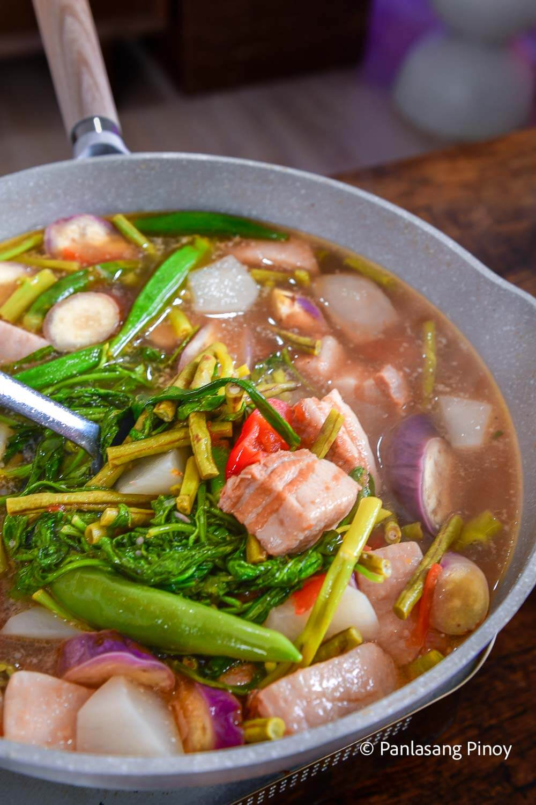
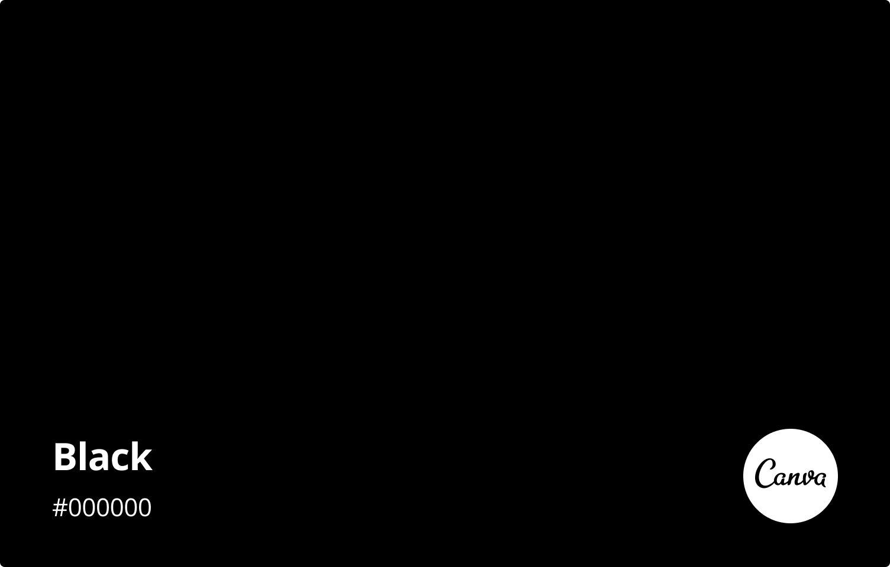
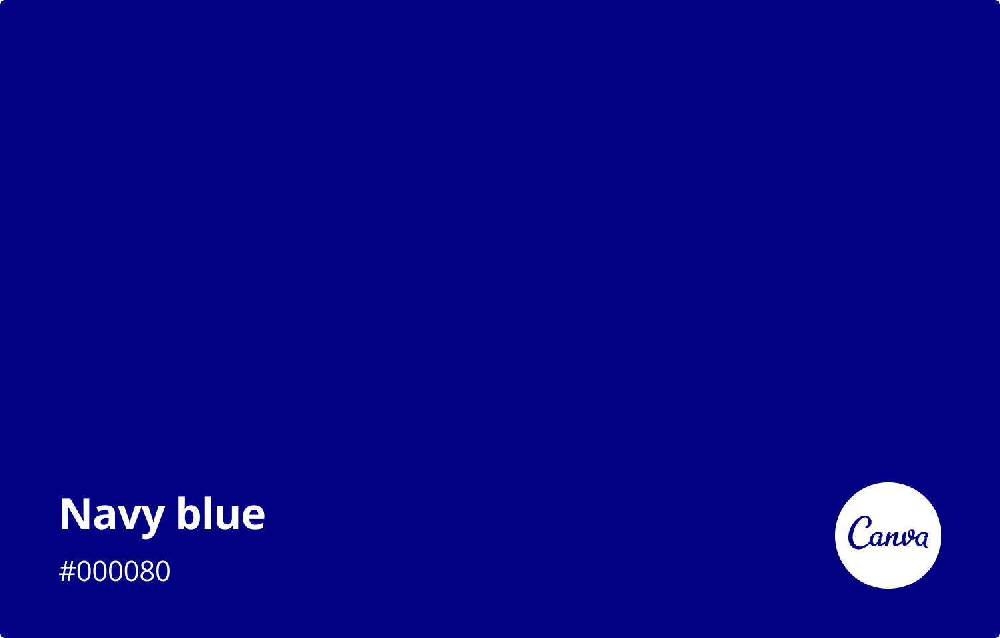
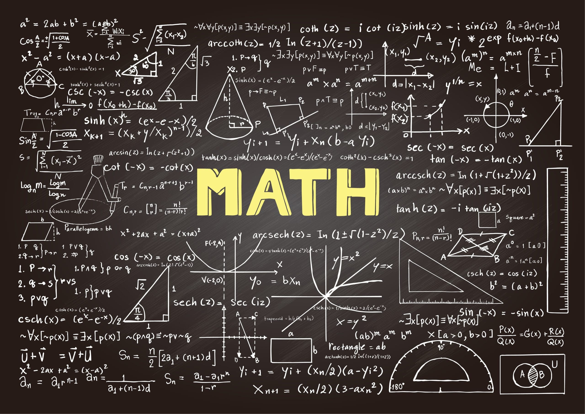
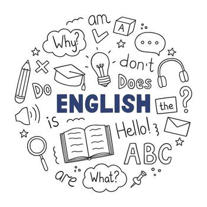
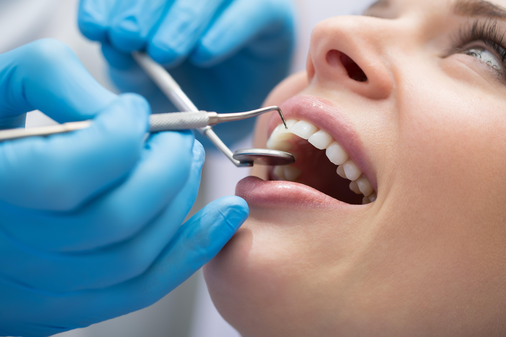

🎬 My Favorite Movie

How to Train Your Dragon
Description: It became my favorite because I used to watch this over and over again; it is my childhood movie.
🎬 My Partner's Favorite Movie

Bones and All
Description: My favorite movie is Bones and All, mainly because Taylor Russell and Timothée Chalamet are in it.
🎞️ My Favorite Genre #1

Genre: (all types of genres)
Description: I like this genre because it includes comedy, horror, fantasy, and all the stuff I love.
🎞️ My Favorite Genre #2

Genre: Romance
Description: I love this genre because it involves romance, which I really love. I can learn something from it.
🎞️ My Partner's Favorite Genre #1

Genre: Coming-of-age
Description: I enjoy stories that show characters growing or surviving intense situations.
🎞️ My Partner's Favorite Genre #2

Genre: Dystopian
Description: I enjoy stories that show characters growing or surviving intense situations.
🍔 My Favorite Food

Food: Pizza
Description: I don’t just like this food; I love it. This is one of my favorite comfort foods.
🍕 My Partner's Favorite Food

Food: Sinigang
Description: I love sinigang because it’s warm and comforting.
🎨 My Favorite Color

Color: Black
Description: I love black because it fits every outfit I wear.
🎨 My Partner's Favorite Color

Color: Navy Blue
Description: Navy blue feels like me.
📘 My Favorite Subject

Subject: Mathematics
Description: This is my favorite subject because i reallyy love solving and playing with numbers, and im kinda good at it, i got motivated from my father, because he is super good in math, he is my inspiration.
📕 My Partner's Favorite Subject

Subject: English
Description: I enjoy expressing my thoughts, reading stories, and understanding deeper meanings in English.
Our Dream Careers
💼 My Dream Career
Career: Computer Engineering
Description: Computer engineering was always in my dream or goals in my life, because my father is one of them, i got inspire by him, i want to explore everything in technology, i hope i will be become a Computer engineering ond day.
💼 My Partner's Dream Career

Career: Dentist
Description: I’m not completely sure about my future yet, but I’m considering becoming a dentist here in the Philippines. I like the idea of having a stable and meaningful career where I can help people and improve their confidence. At the same time, part of me still dreams about exploring life somewhere far away and living freely.
Thanks for Visiting And Watching for our website!!!
We hope you enjoyed learning more about us.